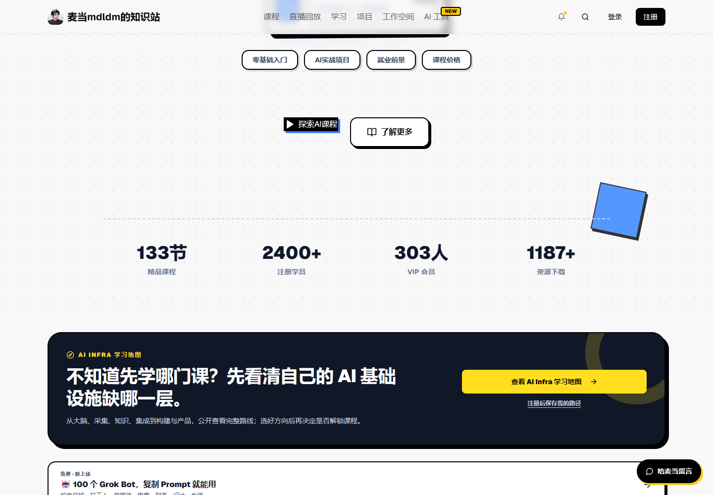
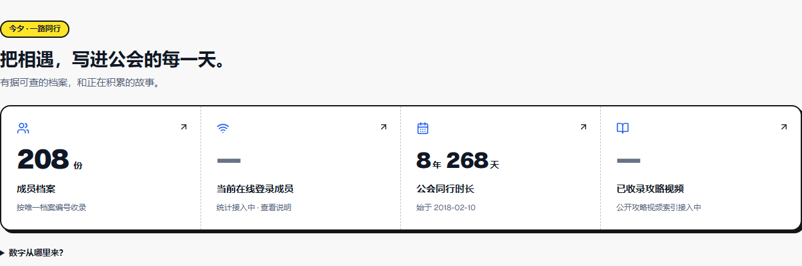
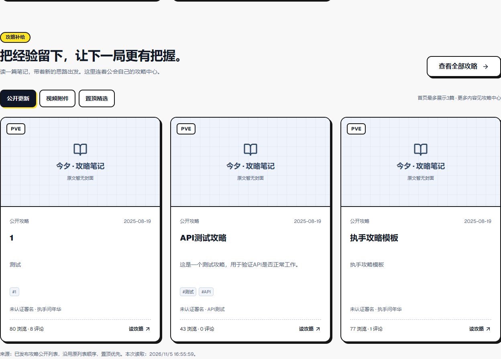

<!doctype html><html lang="zh-CN"><meta charset="utf-8"><meta name="viewport" content="width=device-width,initial-scale=1"><title>005S A 视觉对照 1440</title><style>*{box-sizing:border-box}body{margin:0;background:#f8f8f8;color:#101828;font:15px/1.7 system-ui,'Microsoft YaHei',sans-serif}main{max-width:1280px;margin:auto;padding:28px 20px}h1{font-size:28px;line-height:1.35;margin:0 0 16px}h2{font-size:21px;margin:8px 0 16px}h3{font-size:17px}p{margin:12px 0;color:#52627a}a{color:#1640a0}nav{display:flex;flex-wrap:wrap;gap:12px;margin:24px 0}nav a{color:#101828;text-decoration:none;background:#ffe528;border:2px solid #151515;border-radius:10px;box-shadow:3px 3px #151515;padding:9px 15px;font-weight:800}.note{background:white;padding:18px;border:2px solid #151515;border-radius:12px}ul{columns:2;column-width:320px;padding-left:22px}figure{margin:20px 0;background:white;border:2px solid #151515;border-radius:12px;padding:16px;min-width:0}figcaption{font-weight:800;margin-bottom:12px}figure img{display:block;width:100%;height:auto}small{font-size:12px;color:#52627a}.pair{display:grid;grid-template-columns:1fr 1fr;gap:20px;align-items:start}.pair section{min-width:0}.pair figure{padding:10px}table{width:100%;border-collapse:collapse;font-size:14px}td,th{text-align:left;border:1px solid #b8c1cd;padding:10px}@media(max-width:650px){.pair{grid-template-columns:1fr}h1{font-size:24px}}</style><main><h1>四项数字与内容卡 · 1440px</h1><p>左：mdldm.club现场参照（A），右：今夕真实组件。不同业务与拍摄高度，不作像素复制结论。</p><div class="pair"><section><h2>公开参考站</h2><figure><figcaption>Hero下沿统计 · 实际视口</figcaption></figure><figure><figcaption>推荐内容 · 实际视口</figcaption></figure></section><section><h2>今夕 · A阶段</h2><figure><figcaption>208份档案与安全占位</figcaption></figure><figure><figcaption>源站现有3篇公开稿，未改写标题</figcaption></figure></section></div></main></html>